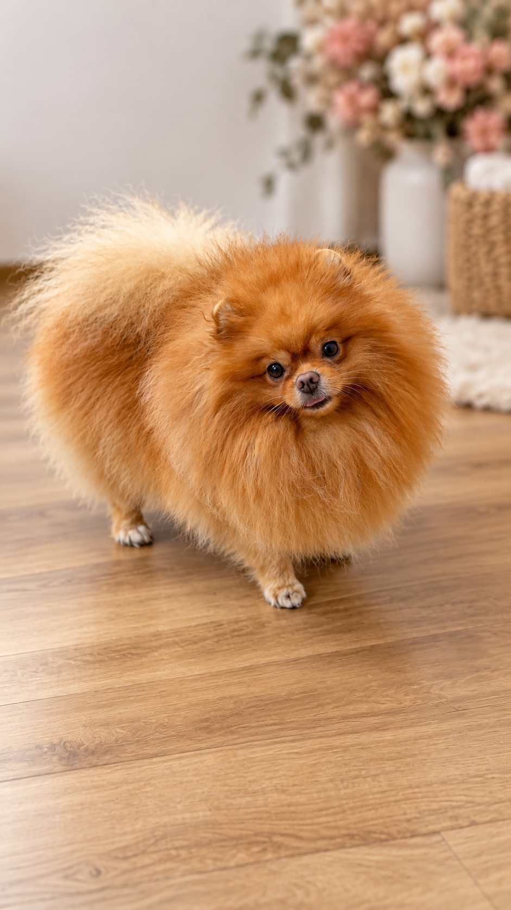
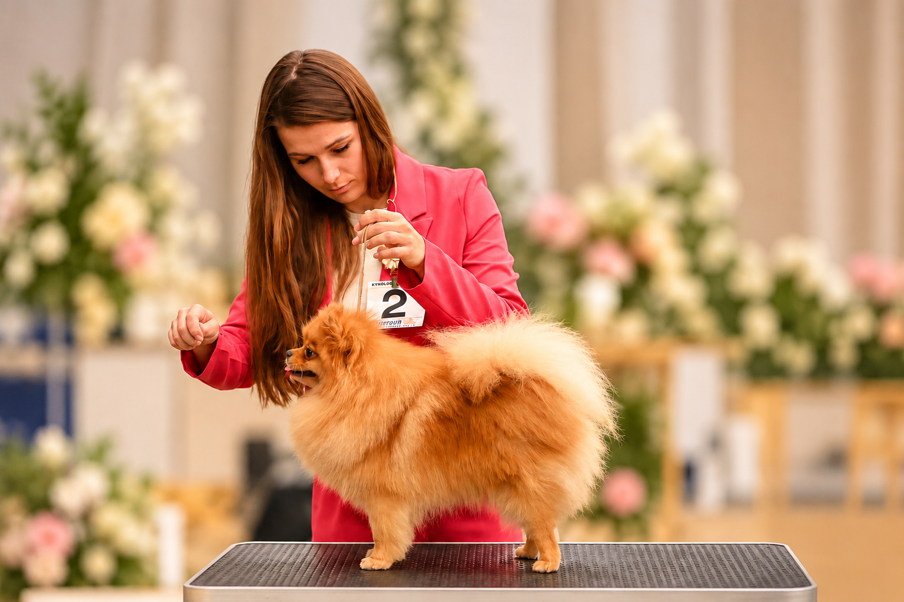
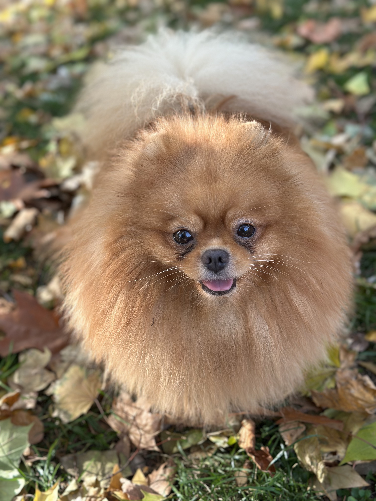

CHOVNÝ PES
Goofy
Goldarichi Goofy
Goofy je náš domácí maskot a úplně první pomeranian, který vstoupil do našeho života. Právě on stál na začátku celé kapitoly Tiny Majesty.
Je dobrosrdečný, společenský a ke každému kamarádský. Má rád společnost lidí i ostatních psů a je přirozenou součástí každého dění u nás doma.
A protože už něco zažil, stal se také tak trochu učitelem našich štěňátek. Umí je přijmout mezi sebe, ukázat jim, jak to u nás chodí, a být jim tím správným dospělým parťákem.
Pro nás ale Goofy není jen náš první pomeranian ani chovný pes. Je to prostě Goofy. Člen rodiny a jeden z těch, bez kterých si dnes Tiny Majesty už neumíme představit.
Goofy je chovný pes a může být po předchozí dohodě nabídnut ke krytí vhodným fenám.